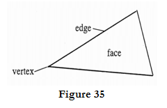

Ans:
B-Rep:
- B-Rep stands for Boundary Representation.
- It is an extension to the wireframe model.
- B-Rep describes the solid in terms of its surface boundaries: Vertices, edges and faces as shown in figure
- 
img35
- It is a method for representing shapes using the limits.
- A solid is represented as a collection of connected surface elements, the boundary between solid and non-solid.
- There are 2 types of information in a B – rep topological and geometric.
- Topological information provides the relationships among vertices, edges and faces similar to that used in a wireframe model.
- In addition to connectivity, topological information also includes orientation of edges and faces.
- Geometric information is usually equations of the edges and faces.
- The B-rep of 2 manifolds that have faces with holes satisfies the generalized Euler’s formula:
V–E+F–H=2(C−G)
V–E+F–H=2(C−G)
Where, V = Number of vertices.
E = Number of edges.
F = Number of faces.
H = Number of holes in the faces.
C is the number of separate components (parts).
G is the genus (for a torus G = 1)